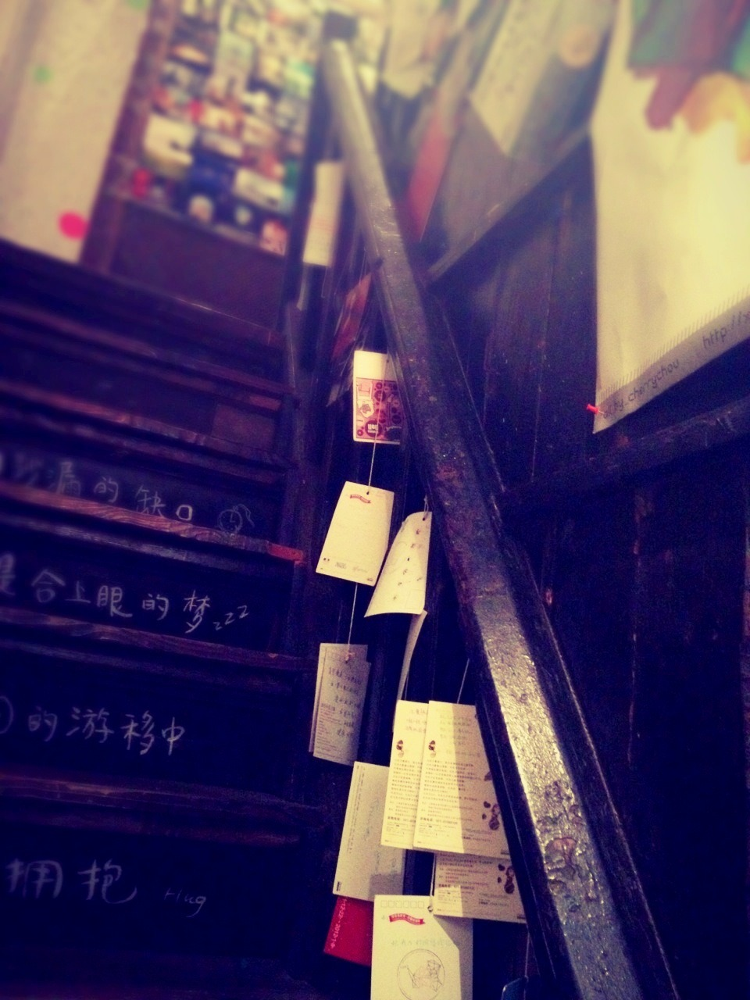
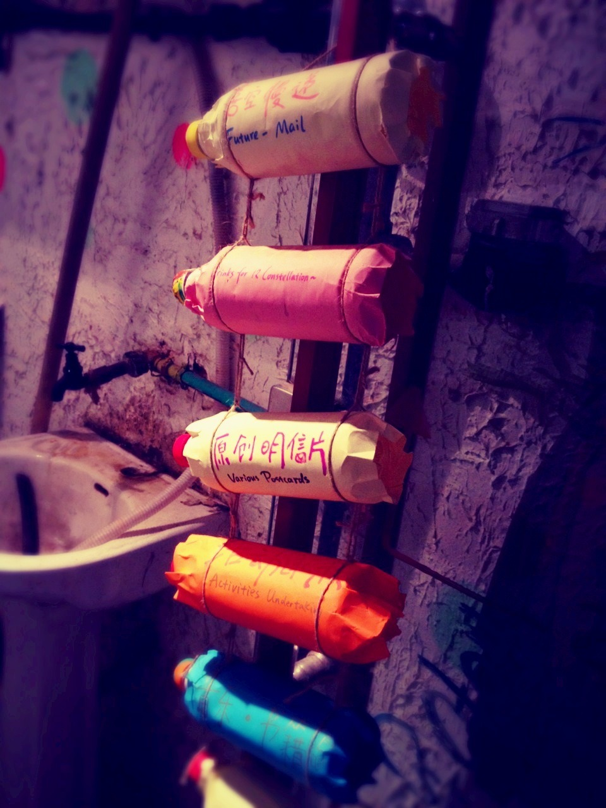
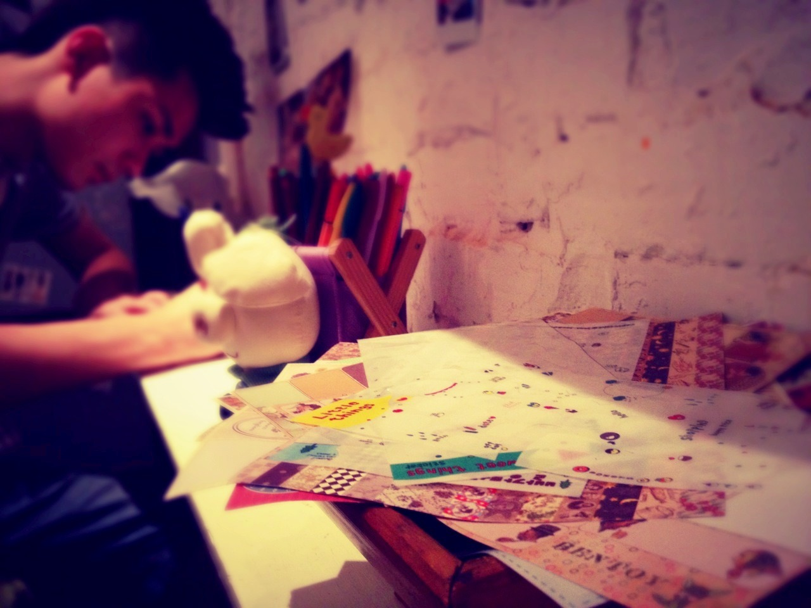
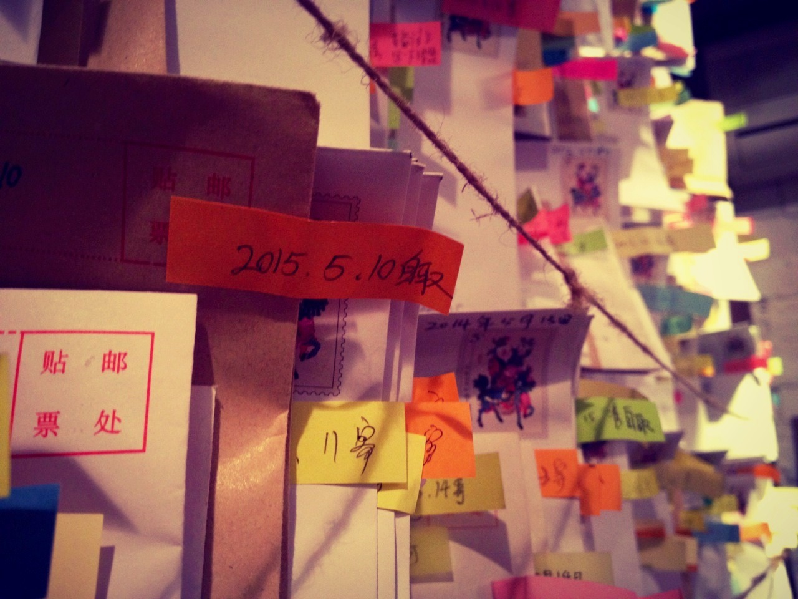
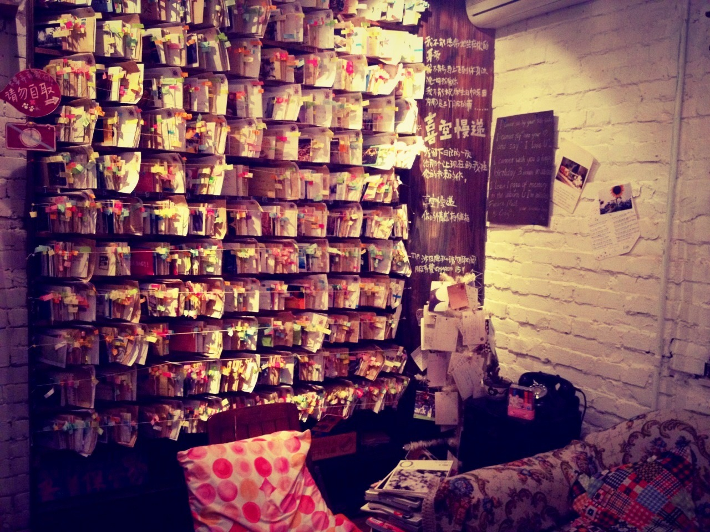
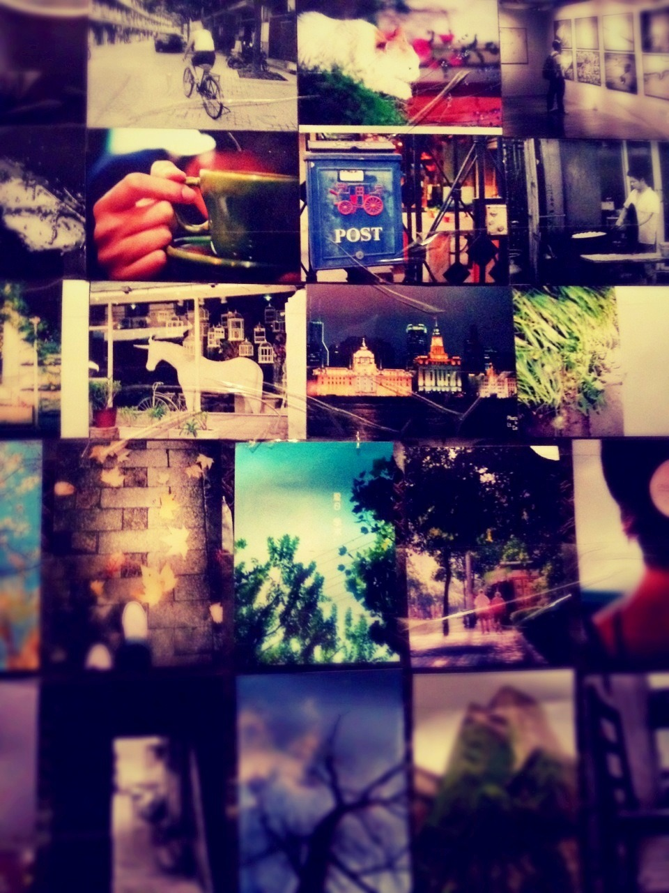
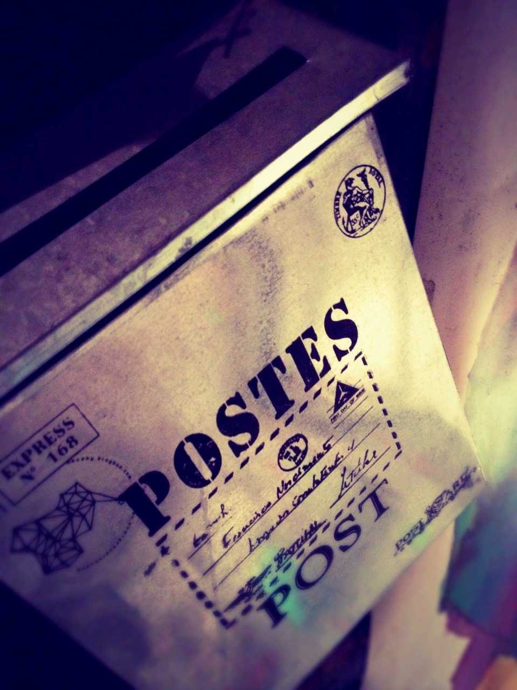

Thu, 14 Jun 2012 18:18:30 · shanghai · china · 中国 · 上海 · travel · wanderlust · postcard · timetravel
postcards to the future what if you could







• Postcards to the future •
What if you could send letters/postcards to the future? Yes, we’re talking about the long forgotten art of writing messages with pen and paper and actually sending them the ol’ skool way… by mail. Well, this little place in Shanghai called cSky* located somewhere inside the labyrinth called Tianzifang, allows you to do just that. With the exception that you could prearranged the delivery set anytime in the future. The idea reminded me of this film, but probably with less morbid sentiments though.
Writing postcards to family and friends is something that I enjoy the most when traveling. A little piece of memory to share while on the road. It’s old fashion yet I found myself warmed to the thoughts that someone somewhere (hopefully) appreciate my short scribble.
–
*cSky: 田子坊 泰康路264号2楼